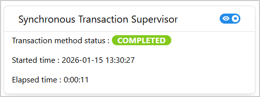
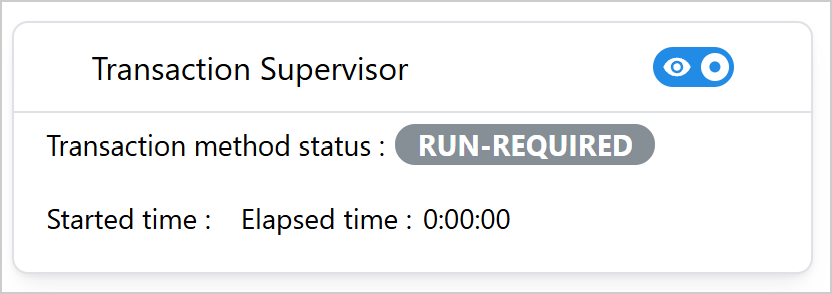
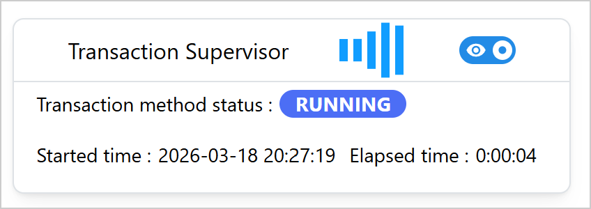
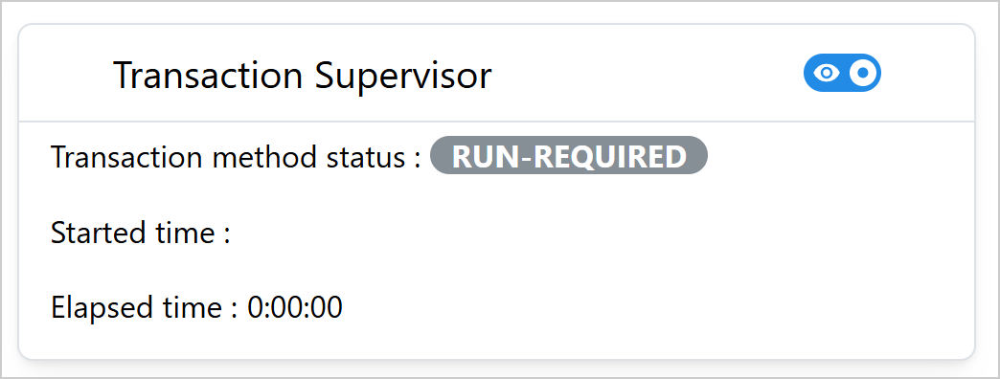

Transaction Supervisor#
TransactionSupervisor is a Dash All-in-One (AIO) component for monitoring the status of a SAF
GLOW transaction method in real-time. It provides a visual interface for tracking the progress and
status of the method execution. The component supports both synchronous and asynchronous
(long-running) methods.
Key features:
Real-time status monitoring: Automatic polling of the GLOW API to track method status in real time.
Visual status badges: Color-coded badges indicating running, completed, failed, and run-required states.
Elapsed time tracking: Displays elapsed time since the method started.
Started time display: Shows the timestamp when the method began execution.
Toggle visibility: Option to hide or show the monitoring panel.
Customizable appearance and layout: Configurable title, dimensions, orientation, and font sizes.

Usage#
Warning
The TransactionSupervisor component can only be used as part of a SAF-based solution. It
requires access to the GLOW API server to monitor transaction method status.
Basic usage#
The following example assumes the existence of an application with a solution definition named
MySolution, at least one step model named my_step, and a transaction method named
my_method which computes an output value output.
Import TransactionSupervisor:
from ansys.solutions.dash_super_components import TransactionSupervisor
The TransactionSupervisor cannot be directly added to the page layout. It must be initialized
via a callback triggered on page load because it needs access to the project URL.
def layout_transaction_supervisor():
return html.Div(
[
dmc.Button(
"Run method",
id="run_method_button_supervisor",
),
dmc.Space(h=16),
html.Div(id="transaction_supervisor_container"),
]
)
@callback(
Output("transaction_supervisor_container", "children"),
Input("url", "pathname"),
)
def initialize_transaction_supervisor(
project: SuperComponentsWithSAFSolution,
) -> TransactionSupervisor:
"""Initialize the transaction supervisor on page load."""
return TransactionSupervisor(
aio_id="transaction_supervisor",
url=project.url,
step_name="my_step",
method_name="my_method_synchronous",
)
The following output is expected:
{kind=link}

Activate monitoring#
In this example, the transaction method is triggered when the user clicks the “Run method” button. Assuming that the transaction method is synchronous (that is, it runs and completes within the same callback), the monitoring needs to be activated in a separate callback that listens to the same button click.
To activate the monitoring, set the activate_monitoring store to True:
@callback(
Output(TransactionSupervisor.ids.activate_monitoring("transaction_supervisor"), "data"),
Input("run_method_button_supervisor", "n_clicks"),
prevent_initial_call=True,
)
def monitor_method(n_clicks):
"""Activate monitoring when the method is triggered."""
if n_clicks:
return True
raise PreventUpdate
@callback(
Input("run_method_button_supervisor", "n_clicks"),
State("url", "pathname"),
prevent_initial_call=True,
)
def run_method(n_clicks: int, project: SuperComponentsWithSAFSolution) -> str:
"""Run the method and return its output."""
if n_clicks:
step = project.steps.my_step
step.my_method_synchronous()
raise PreventUpdate
When the button is clicked, the supervisor starts monitoring the method status, records the start time, and updates the elapsed time while the method is running. When the method is running, the expected output is similar to the following:
{kind=link}

Note that this example calls the transaction method and activates monitoring in two separate
callbacks. For asynchronous (“long-running”) transaction methods, starting the transaction method
and activating the badge monitoring can be done in a single callback, as shown in
Activate monitoring for the
TransactionMethodStatusBadge component.
Warning
Make sure to not trigger a synchronous transaction method again while it is still running and being monitored, as this can lead to unexpected behavior.
Advanced usage#
The following example shows a more customized TransactionSupervisor with a custom title,
dimensions, orientation, and font sizes:
@callback(
Output("transaction_supervisor_container_advanced", "children"),
Input("url", "pathname"),
)
def initialize_transaction_supervisor_advanced(
project: SuperComponentsWithSAFSolution,
) -> TransactionSupervisor:
"""Initialize the transaction supervisor on page load."""
return TransactionSupervisor(
aio_id="transaction_supervisor_advanced",
title="Transaction Supervisor",
url=project.url,
step_name="my_step",
method_name="my_method_synchronous_2",
width=500,
show=True,
orientation="vertical",
title_font_size="20px",
font_size="16px",
)
The following output is expected:
{kind=link}

How it works#
Initialization: The component is created with the GLOW API URL and method details
Activation: When
activate_monitoringis set toTrue, supervision beginsPolling: The component polls the GLOW API every second (1000 ms interval) to check method status
Status Updates: The badge color changes based on status: - Gray: run-required (method hasn’t been executed yet) - Blue: running (method is currently executing) - Lime: completed (method finished successfully) - Red: failed (method encountered an error)
Auto-stop: Supervision automatically stops when the method completes or fails
Time Tracking: Started time and elapsed time are tracked and displayed during execution
Properties#
Constructor parameters#
Parameter |
Description |
Type |
Required |
|---|---|---|---|
url |
The URL of the GLOW API server. Typically obtained from
|
str |
Yes |
step_name |
The name of the GLOW step (StepModel) that contains the method. |
str |
Yes |
method_name |
The name of the GLOW transaction method whose status is being monitored. |
str |
Yes |
title |
The title displayed in the card component header.
Default: |
str |
No |
show |
Initial visibility state of the monitoring panel.
Default: |
bool |
No |
aio_id |
The unique identifier for the component. If not provided, a UUID is generated. |
str |
No |
width |
The width of the card component.
Default: |
str or int |
No |
font_size |
The font size for text content in the card.
Default: |
str |
No |
title_font_size |
The font size for the card title.
Default: |
str |
No |
orientation |
Layout orientation of the monitoring fields. Can be
|
str |
No |
Component IDs#
The component exposes the following IDs for use in callbacks:
TransactionSupervisor.ids.activate_monitoring(aio_id): Store that triggers monitoring activation (setdatatoTrue).TransactionSupervisor.ids.transaction_status_badge(aio_id): Badge displaying current statusTransactionSupervisor.ids.switch(aio_id): Switch for toggling panel visibilityTransactionSupervisor.ids.started_time_label(aio_id): Label showing when the method startedTransactionSupervisor.ids.elapsed_time_label(aio_id): Label showing elapsed time
Status badge colors#
The transaction status badge uses the following color scheme:
Status |
Color |
Description |
|---|---|---|
run-required |
Gray |
Method has not been executed yet |
running |
Indigo |
Method is currently executing |
completed |
Lime |
Method finished successfully |
failed |
Red |
Method encountered an error during execution |
Limitations#
The component cannot be initialized directly in the page layout. It must be added via a callback triggered on page load to access the project URL.
The component requires a running GLOW API server to function properly.
As the timing information is tracked on the frontend, the elapsed time can only be tracked reliably when the user stays on the same page during the method execution. When the user navigates away from the page and returns back, the elapsed time can only be calculated correctly when the method is still running. If the method has already completed or failed, the elapsed time is thus not displayed.
For the same reason, the timing information can only be tracked reliably when the method is triggered and monitored from the same page, and when the supervisor is always activated when the method is triggered. If the method was triggered from a different page than the one where the supervisor is initialized, or if the transaction has been run without the supervisor being activated, the displayed time information may be wrong.
When the user switches to another project, the timing information is not preserved.
The polling interval is fixed at 1000 ms (1 second) and cannot be customized.
Full example#
For a complete working example demonstrating synchronous method monitoring with success and error cases, check out the showcase example.
The example shows:
Two
TransactionSupervisorcomponents initialized on page load, both monitoring the samecompute_summethodTriggering the computation with success or with a forced failure to demonstrate both successful and failed outcomes
A default supervisor using only the required constructor arguments
A customized supervisor with a fixed width, larger font sizes, vertical orientation, and a custom title
For a minimal self-contained runnable example, see the Transaction Supervisor page in the Examples gallery.
Source code#
For the full API reference of TransactionSupervisor, see
TransactionSupervisor.
Check out the component source code to discover the underlying logic. Contributions are welcomed. You can extend the component functionalities by raising a pull request in the super-components-for-dash repository.